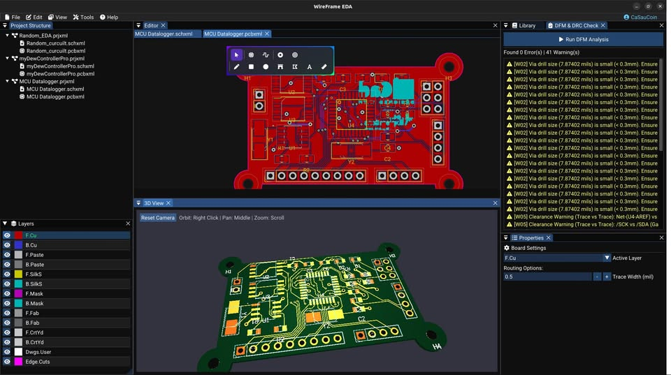
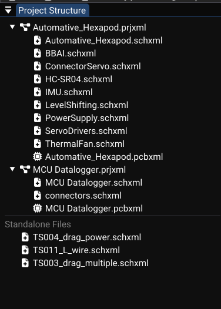
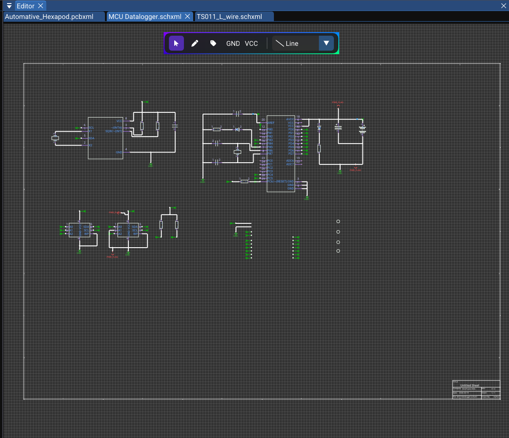
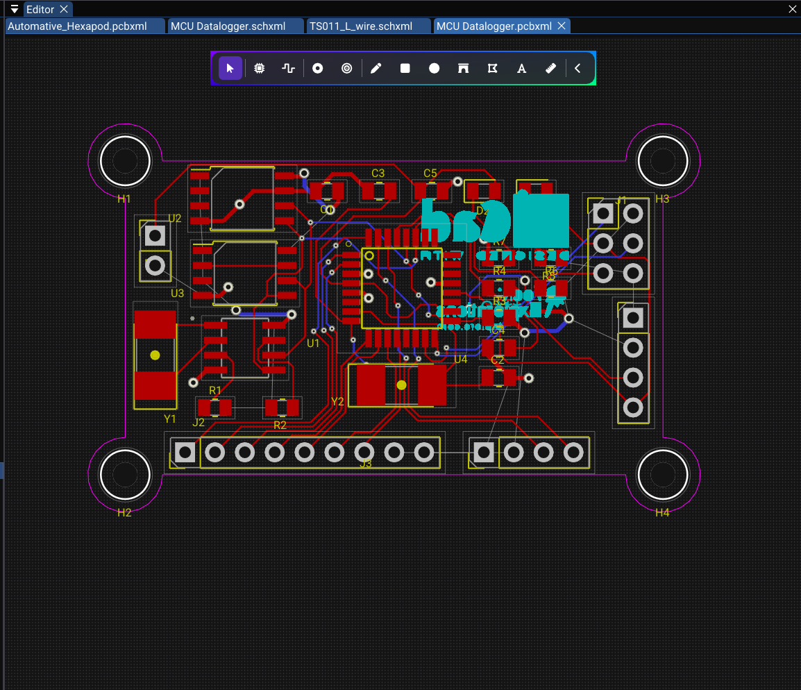
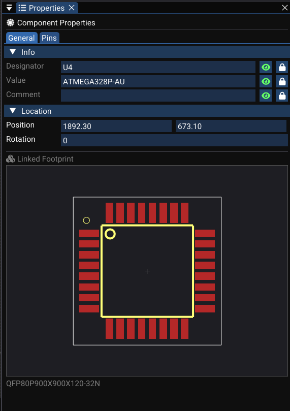
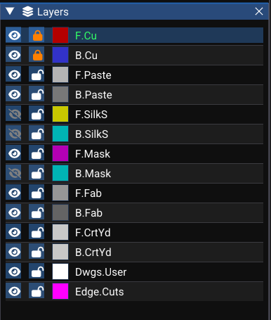

User Interface Overview¶
This page provides a detailed tour of every part of the WireFrame UI. Understanding the layout will help you work efficiently as you design schematics and PCBs.

Menu Bar¶
Located at the top of the window. Provides access to all major operations:
File menu¶
| Action | Shortcut | Description |
|---|---|---|
| New Project… | Create a new .prjxml project |
|
| Open Project… | Open an existing project | |
| Open… | Ctrl+O | Open a schematic or PCB file |
| New Schematic | Ctrl+N | Create a new schematic document |
| New PCB | Create a new PCB document | |
| Save | Ctrl+S | Save the active document |
| Save As… | Ctrl+Shift+S | Save with a new filename |
| Close Project | Close the active project | |
| Export → | Sub-menu for PDF, Gerber, BOM export |
Edit menu¶
| Action | Shortcut | Description |
|---|---|---|
| Undo | Ctrl+Z | Undo last action |
| Redo | Ctrl+Y | Redo last undone action |
| Cut | Ctrl+X | Cut selected items to clipboard |
| Copy | Ctrl+C | Copy selected items |
| Paste | Ctrl+V | Paste from clipboard |
| Delete | Del | Delete selected items |
View menu¶
| Action | Description |
|---|---|
| Toggle Library | Show/hide the Library panel |
| Toggle Layers | Show/hide the Layer panel (PCB) |
| Toggle Properties | Show/hide the Properties panel |
| 3D Viewer… | Open the 3D PCB viewer |
| Fit to Screen | Zoom to fit all content |
Tools menu¶
| Action | Description |
|---|---|
| Symbol Editor | Open the symbol library editor |
| Footprint Wizard | Open the footprint generator |
| Design Rules | Open design rules configuration |
| DFM Check | Run DFM/DRC checks on the active PCB |
| Gerber Viewer | Open the built-in Gerber file viewer |
| Keymap… | Open the keyboard shortcut editor |
Help menu¶
| Action | Description |
|---|---|
| About | Show version and license information |
| Check for Updates | Check for newer versions (if enabled) |
Docking Layout¶
WireFrame uses docking layout, giving you full control over panel arrangement:
- Drag tabs to move panels between docking zones (left, right, bottom, center).
- Float panels by dragging them outside the docking area — they become independent windows.
- Split zones by dropping a panel on the edge of an existing zone.
- Layout persistence: your arrangement is saved automatically via ImGui configuration and restored on next launch.
Common default panels:
| Panel | Default position |
|---|---|
| Project Structure | Left |
| Editor (canvas) | Center |
| Library | Right (top) |
| Properties | Right (bottom) |
| Layers (PCB only) | Right (middle) |
| Logger / Notifications | Overlay (bottom-right) |
Project Structure Panel¶
Shows all open projects and their contents in a tree view:
- Project node (
.prjxml) — the root.- Schematics — lists all
.schxmlfiles registered in the project. - PCBs — lists all
.pcbxmlfiles registered in the project.
- Schematics — lists all
Interactions¶
| Action | How |
|---|---|
| Open a document | Click a schematic or PCB entry |
| Add new schematic/PCB | Right-click project → Add New… |
| Rename a file | Right-click → Rename |
| Remove from project | Right-click → Remove |
| Delete from disk | Right-click → Delete (with confirmation) |
Standalone mode
You can open schematic/PCB files without a project. They appear as standalone tabs in the editor but are not linked to a project tree.

See Projects & Files for more details.
Editor Panel¶
The central area where you design. It holds:
- One tab per open document (schematic or PCB).
- Tab shows the filename (or "Untitled-SCH-N" / "Untitled-PCB-N" for new documents).
- A dot or asterisk next to the name indicates unsaved changes.
- Right-click a tab to Close, Close Others, or Close All.
Canvas behavior (common to schematic and PCB)¶
| Feature | Description |
|---|---|
| Grid | Dot grid for alignment; grid spacing depends on zoom level |
| Pan | Hold middle mouse button and drag |
| Zoom | Mouse scroll wheel, centered on cursor |
| Fit to screen | Press F (default) to fit all content in view |
| Zoom to selection | Press Shift+F to zoom to selected items |
Schematic canvas¶
Displays a page outline (A4/A3/custom), title block border, and all placed components, wires and graphics.
PCB canvas¶
Displays the board area, placed footprints, traces, vias, zones and ratsnest lines.
Library Panel¶
Context-sensitive — content changes based on the active document type:
When a schematic is active¶
- Shows loaded symbol libraries and their symbols.
- Search filter at the top for quick lookup (type partial name like
STM32orR_). - Double-click a symbol to start placing it on the schematic canvas.
- Right-click for options: Unload Library, Reload, Link Footprint.

When a PCB is active¶
- Shows loaded footprint libraries and their footprints.
- Same search filter functionality.
- Double-click to place a footprint on the PCB, or to assign to a selected component.
- Right-click for options: Unload, Reload, Open in Footprint Wizard.

Properties Panel¶
Displays editable information about the current selection and active document:
Schematic properties¶
| Selection | Properties shown |
|---|---|
| Single component | Designator, Value, Comment, Footprint, Rotation, Position |
| Net label | Net name, Position, Font size, Visibility |
| Wire | Net name, Connected pins list |
| Graphic object | Position, Size, Color, Layer, Line width |
| No selection | Page settings (paper size, title, company, revision, date) |
PCB properties¶
| Selection | Properties shown |
|---|---|
| Footprint | Reference, Value, Layer, Position, Rotation, 3D model |
| Trace | Net name, Layer, Width, Length |
| Via | Net name, Position, Diameter, Drill |
| Pad | Number, Net, Shape, Size, Drill, Layers |
| Zone | Net name, Layer, Priority, Clearance |
| No selection | Board boundary, Design rules summary |
All property edits are applied through the command system and are fully undoable/redoable.

Toolbars¶
Schematic toolbar¶
A floating toolbar over the schematic canvas (centered at the top):
| Tool | Icon description | Mode |
|---|---|---|
| Select | Arrow cursor | Default selection and move mode |
| Wire | Angled line | Draw orthogonal wires between pins |
| Label | "A" with tag | Place net labels |
| Text | "T" | Place text annotations |
| Line | Diagonal line | Draw straight lines |
| Rectangle | Rectangle outline | Draw rectangles |
| Circle | Circle outline | Draw circles |
| Arc | Curved line | Draw arcs |
| Polygon | Pentagon | Draw polygons (multi-vertex) |
| Junction | Filled dot | Place junction dots |
| Harness | Bundled wires | Draw net harness graphics |
| GND | Ground symbol | Place GND power symbol |
| VCC | Arrow-up symbol | Place VCC power symbol |
The active tool is highlighted with a cyan background. Click a different tool button to change modes.
PCB toolbar¶
A similar floating toolbar over the PCB canvas:
| Tool | Icon description | Mode |
|---|---|---|
| Select | Arrow cursor | Default selection and move mode |
| Place Footprint | IC package | Place a footprint from library |
| Route Trace | Trace path | Route traces between pads |
| Draw Via | Via circle | Place vias |
| Place Hole | Drill circle | Place mechanical holes |
| Draw Line | Diagonal line | Draw graphic lines |
| Draw Rect | Rectangle | Draw graphic rectangles |
| Draw Circle | Circle | Draw graphic circles |
| Draw Arc | Arc | Draw graphic arcs |
| Draw Polygon | Pentagon | Draw graphic polygons |
| Draw Text | "T" | Place text on silkscreen/fab layers |
| Measure | Ruler | Measure distances on the board |
Layer Panel (PCB Only)¶
Displayed when a PCB document is active. Shows a table of all board layers:
| Column | Description |
|---|---|
| Eye icon | Toggle layer visibility (click to show/hide) |
| Color patch | Layer color — click to open color picker |
| Layer name | Click to set as the active routing/drawing layer |
The currently active layer is highlighted (e.g., F.Cu with a cyan indicator).

Notifications and Logger¶
The Logger overlay displays transient messages at the bottom-right corner of the editor:
| Severity | Icon | Color | Example |
|---|---|---|---|
| Info | Blue | "Project loaded successfully" | |
| Success | Green | "File saved: main.schxml" | |
| Warning | Yellow | "Library parsing: 2 symbols skipped" | |
| Error | Red | "Failed to save: permission denied" |
Messages auto-fade after a few seconds. They are used for:
- File I/O success or failure.
- Project operations (open, close, create).
- DFM/DRC results summary.
- Library loading progress.
See Also¶
- Projects & Files — how projects are structured and linked to documents.
- Schematic Editor — detailed guide to the schematic workspace.
- PCB Editor — detailed guide to the PCB workspace.
- Keyboard Shortcuts — full list of customizable key bindings.